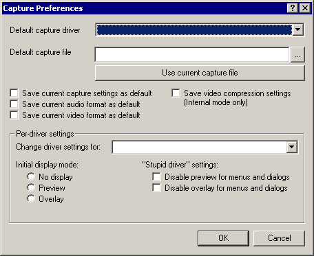

VirtualDub help - Dialogs: Capture preferences | |
| On a crash... Dialogs: Video filtersVideo frame rate control Video color depth Video range Video compression Audio filters Audio interleaving Audio compression Audio conversion Audio volume Capture settings Capture preferences Capture volume meter Preferences |  Controls basic video capture settings.
|